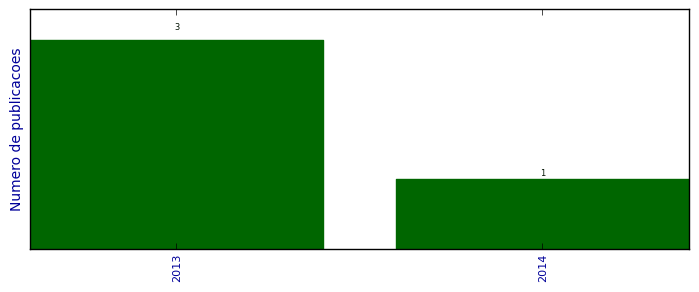

UFSM - Análise do Lattes
Artigos aceitos para publicação

Número total de itens: 4
2014
| 1. | BARBOSA, G. ; FAGAN, S. B. ; MARTINEZ, D. ; ALVES, O. L. ; RODRIGUES JUNIOR, L. C.. Lipopolysaccharide influences on the toxicity of oxidised multiwalled carbon nanotubes to murine splenocytes iin vitro/i. Journal of Experimental Nanoscience. 2014.  [ citações Google Scholar | citações Microsoft Acadêmico | busca Google ] |
2013
| 1. | MACHADO, Fernando Machado ; FAGAN, S. B. ; BERGMANN, C. P. ; LIMA, E. C. ; ADEBAYO, M. A.. Adsorption of a textile dye from aqueous solutions by carbon nanotubes. Materials Research (São Carlos. Impresso). 2013. [ citações Google Scholar | citações Microsoft Acadêmico | busca Google ] |
| 2. | MOURA, J. U. ; BARBOSA, G. ; GENRO, C. ; HERNANDEZ, R. D. ; IZQUIERDO, S. S. ; GOMES, P. ; FAGAN, S. B. ; RAFFIN, R.. Development of Mangiferin-loaded polymeric nanocapsules. Journal of Nanopharmaceutics and Drug Delivery. 2013. [ citações Google Scholar | citações Microsoft Acadêmico | busca Google ] |
| 3. | VENDRAME, L. ; BONORINO, F. ; CARMO, G. ; MADALOSSO, R. ; GOMES, P. ; RAFFIN, R. ; FAGAN, S. B.. Simulação de Primeiros Princípios da Mangiferina Interagindo com alfa-ciclodextrina. Química Nova (Impresso). 2013. [ citações Google Scholar | citações Microsoft Acadêmico | busca Google ] |
(*) Relatório criado com produções desde 2009 até HOJE
Data de processamento: 11/04/2014 20:59:57